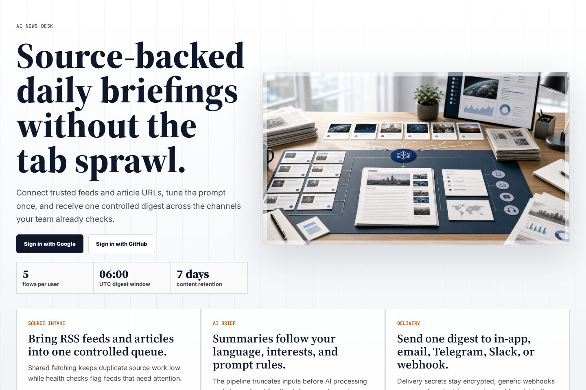
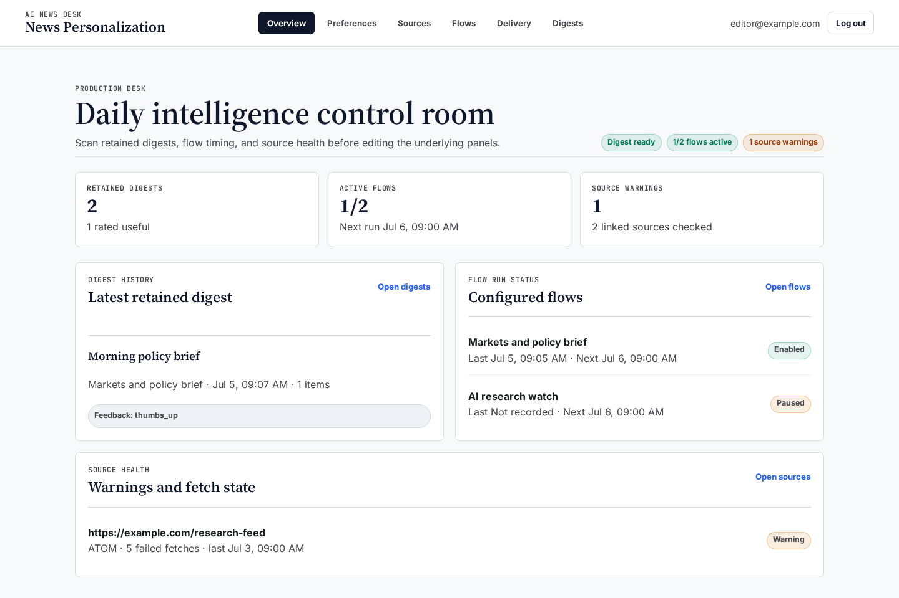
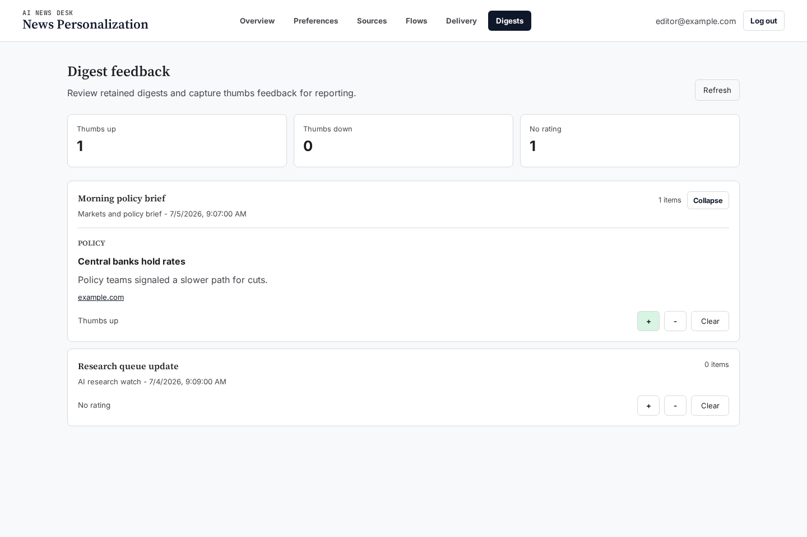
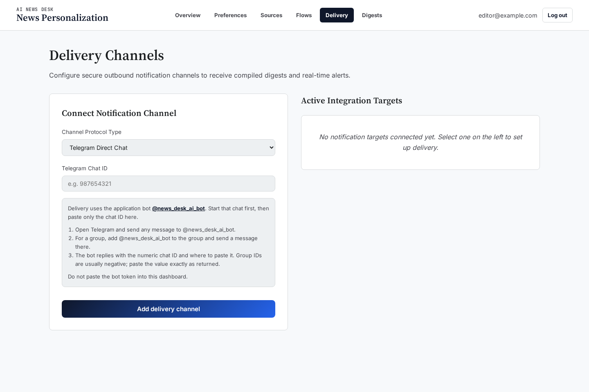
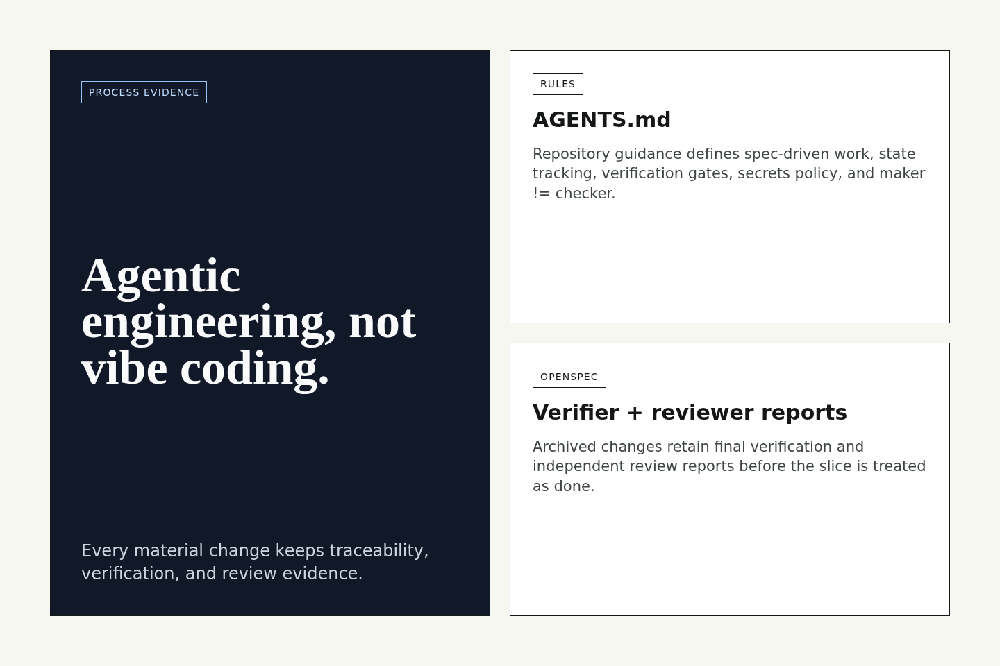

One daily briefing from the sources you trust.
A personalized news aggregator built through traceable agentic engineering.
Product concept
Reduce tab sprawl.
Users connect feeds and articles, tune interests once, and receive one controlled digest.

Operator dashboard
Flows, sources, and digest state are visible.
The app shows enabled flows, source warnings, latest digest status, and next actions.

Digest and delivery
One briefing, multiple outputs.
Keep digests in-app, send them through delivery channels, and retain feedback without keeping content forever.


How it was built agentically
Human intent became verified slices.
- Requirements
- OpenSpec
- Maker
- Verifier
- Reviewer
- Archive
Evidence in the repo
Rules, process notes, tests, and checker reports.
The project records what was decided, what was built, what was checked, and what still needs human bootstrap.

Demo takeaway
Not just generated code.
A small product built through traceable decisions, repeatable checks, and a maker-checker agent loop.
Voiceover generated with AI text-to-speech, if used.